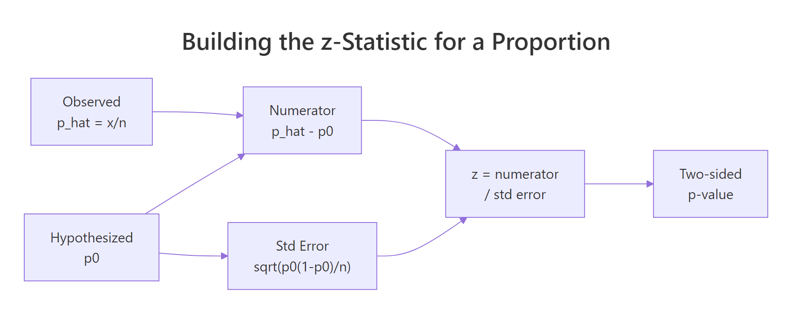
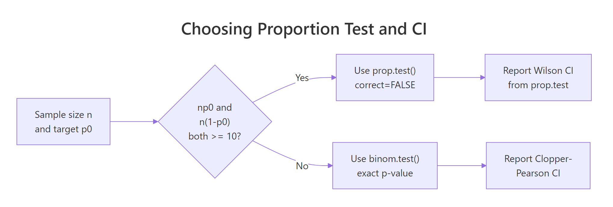

One-Sample Proportion z-Test in R: Large Sample Inference
A one-sample proportion z-test checks whether an observed proportion (like a 35% conversion rate in 400 trials) differs from a hypothesised value under the large-sample normal approximation. It works when np0 and n(1-p0) are both at least 10, returns a z statistic compared to Normal(0, 1), and is the large-sample cousin of the exact binomial test.
What is a one-sample proportion z-test?
You surveyed 400 site visitors and 152 clicked the new pricing page. Your baseline click rate was 35%. Is 38% a real lift or random noise? The z-test answers that by standardising the gap between observed and hypothesised proportions. Let's do it by hand first so the formula never feels like a black box again.
The test statistic is:
$$z = \frac{\hat{p} - p_0}{\sqrt{p_0(1-p_0)/n}}$$
Where $\hat{p}$ is the sample proportion $x/n$, $p_0$ is the null proportion, and $n$ is the sample size. Compare $z$ to a standard Normal distribution.
The sample rate is 38%, which is 3 points above the null of 35%. But the z-statistic is only 1.26, well short of the 1.96 threshold for two-sided significance at the 5% level. The p-value of 0.21 says "this much of a gap or bigger happens by chance about one run in five." You don't have evidence the true click rate has moved. The Wald 95% interval stretches from 0.33 to 0.43, comfortably covering 0.35.

Figure 1: How the z-statistic is built from the sample and hypothesised proportions.
p_hat is p0*(1-p0)/n, so plugging in p0 gives z its clean Normal(0, 1) shape. The score form is what makes the test a test.Try it: A small coffee chain claims 30% of customers order oat milk. In a sample of 200, 48 did. Compute ex_z for this data, then the two-sided p-value in ex_p.
Click to reveal solution
Explanation: 24% observed vs 30% hypothesised gives z = -1.85, two-sided p = 0.064. Close but not significant at the 5% level.
How do you check the large-sample assumptions?
The z-test leans on the Central Limit Theorem to approximate a discrete binomial with a continuous Normal. That approximation is only honest when the expected counts are big enough. The working rule is n*p0 >= 10 and n*(1-p0) >= 10. Some textbooks use 5 as the threshold; 10 is the safer and more widely recommended value.
Alongside the count rule, you also need the data to be a simple random sample from independent trials with two outcomes. If trials cluster (repeat visitors, the same patient measured twice) the nominal 5% error rate will be too optimistic.
Our n=400 case sails through with expected counts of 140 and 260. The n=12 case fails the first count. For that second example the normal approximation would underestimate the tails of the true binomial, so the z-test would give a biased p-value and a poorly-covering Wald interval. Treat assumption checks as a guardrail, not a formality.

Figure 2: Use prop.test() with the Wilson CI when the count rule passes, otherwise fall back to binom.test() with a Clopper-Pearson interval.
binom.test() for an exact p-value from the binomial distribution. See the Exact Binomial Test in R post for the full treatment.Try it: A recruiter claims 20% of applicants pass the coding round. You see 12 passes out of 40. Does the count rule for the z-test hold?
Click to reveal solution
Explanation: n*p0 = 8, which is under 10. The z-test is risky here. Prefer binom.test(x = 12, n = 40, p = 0.20) for a solid p-value.
How do you run the z-test with prop.test()?
R's built-in prop.test() does the same arithmetic you just did by hand, with three twists: it reports a chi-square statistic (which is $z^2$), it offers a Yates continuity correction by default, and it returns a Wilson score interval instead of the Wald one. Setting correct = FALSE strips the continuity correction and lines the function up exactly with the textbook z-test.
The three key inputs are x (successes), n (sample size), and p (the null proportion). The result is an htest object whose statistic, p.value, and conf.int components carry everything you need.
The chi-square statistic 1.58 is exactly $z^2 = 1.258^2$, and the p-value 0.2085 matches the one we computed by hand. That is the core identity behind the "proportion test": R wraps the z-test in a chi-square hull, but the arithmetic under the hood is the same. The confidence interval here is Wilson's, not Wald's, which is why it differs slightly from the manual Wald interval we printed earlier.
One-sided alternatives are one flag away. Use alternative = "greater" if your research question is "the true rate is above $p_0$", and alternative = "less" for the other direction. The p-value is halved in the direction you hypothesised and set to near 1 in the other.
The one-sided "greater" p-value is exactly half the two-sided p-value, because all the evidence sits on that side. The "less" alternative lines up with the opposite tail and gets a p-value near 1. Pick the one-sided flavour only when a directional hypothesis was pre-specified, not because the two-sided result disappointed you.
correct = FALSE when you want the textbook z-test. The default Yates correction shrinks the chi-square toward zero to account for the continuous approximation of a discrete distribution. For sample sizes in the hundreds it changes the p-value only a whisker, but it breaks the clean "chi-square equals z squared" identity.Try it: Use prop.test() to run the one-sided "greater" version of the main example. Store it in ex_res_greater and pull out the p-value.
Click to reveal solution
Explanation: Halving the two-sided p puts all the probability mass in the right tail, giving 0.104. Still not significant at 5%, so directional evidence is also weak.
Which confidence interval should you report: Wald or Wilson?
The Wald interval $\hat{p} \pm z^{*} \sqrt{\hat{p}(1-\hat{p})/n}$ is the formula everyone learns first. It is easy to compute and works fine in the middle of the range. It breaks down as the true proportion approaches 0 or 1 because the SE shrinks but the distribution becomes skewed, and the Wald interval can spill outside [0, 1] or cover too little of the time.
The Wilson score interval solves this by inverting the score test instead of the Wald test. Its centre shifts slightly toward 0.5 and its width uses p0-style variance terms. For any proportion near the boundaries, Wilson delivers noticeably better coverage and never escapes [0, 1]. It is prop.test()'s default interval.
The Wald interval extends to -0.014, a nonsense lower bound for a proportion. The Wilson interval starts at 0.011, stays inside [0, 1], and shifts the centre upward a touch to reflect the pull toward 0.5. When your observed count is small or your proportion is near the boundary, that matters. For proportions near 0.5 in large samples, the two intervals agree to three decimal places.
Try it: A survey shows 30 out of 50 respondents prefer option A. Compute the Wald 95% interval for p_hat = 0.6 and compare it to the Wilson interval from prop.test().
Click to reveal solution
Explanation: At p_hat = 0.6 and n = 50 the intervals nearly agree. Wilson's upper bound sits slightly lower because the score formulation leans in toward 0.5. For most real reporting, Wilson is the safer pick.
How big is the effect? Cohen's h
A p-value answers "could this gap be chance?" but says nothing about "is the gap big enough to care about?" Cohen's h fills that second slot. It is an effect-size measure for proportions based on the arcsine-square-root transform, which stabilises the variance across the 0-to-1 range.
The formula is:
$$h = 2 \arcsin(\sqrt{\hat{p}}) - 2 \arcsin(\sqrt{p_0})$$
Cohen's benchmark thresholds are 0.2 (small), 0.5 (medium), and 0.8 (large). Because the transform stretches near the boundaries, h does a much better job than the raw difference p_hat - p0 when either proportion is close to 0 or 1.
The effect is 0.063, well below the 0.2 "small" threshold. Read this as: even if the true click rate really did move from 35% to 38%, that shift is tiny by the standards of this scale. The non-significant p-value from earlier now has a companion story: there is very little signal to find, and the sample of 400 did not find it.
h decouples "is there a signal?" from "is the signal worth acting on?"Try it: Compute Cohen's h for two scenarios against a null of 0.50: 70/100 and 55/100. Compare the sizes.
Click to reveal solution
Explanation: A shift from 0.50 to 0.70 gives h = 0.41 (small-to-medium). A shift from 0.50 to 0.55 gives h = 0.10, half the small threshold. Same sample size, very different real-world importance.
How many observations do you need? Power and sample size
Planning a proportion study without thinking about power is how underpowered research gets published. Given a target effect size you care about, a significance level (usually 0.05), and a desired power (usually 0.80), you can solve for the sample size needed. The pwr package makes this one function call.
The question comes in two flavours. Prospective: "how many observations do I need to have an 80% chance of detecting h = 0.2 at alpha = 0.05?" Retrospective: "given my n and observed h, what power did I actually have?" Both use pwr::pwr.p.test.
You need about 197 observations to have 80% power to detect a "small" effect at the 5% level. That is the minimum sample size for a well-powered test, not a suggestion. If your true effect is smaller than h = 0.2, you will need far more. If it is larger, you can get away with fewer.
Our study had roughly 24% power. That is painfully low: even if a true 3-point lift existed, we had only a one-in-four chance of catching it. This is why the non-significant p-value in the first section is not evidence of no effect. The sample was too small to rule one out.
Try it: Find the sample size you would need to detect a very small effect of h = 0.10 at 80% power and alpha = 0.05.
Click to reveal solution
Explanation: Halving the effect size quadruples the required sample. h = 0.10 needs about 785 observations for 80% power, versus 197 for h = 0.20. Small effects are expensive to detect.
Practice Exercises
Three capstone problems that pull together everything above. Work through them in order.
Exercise 1: Website redesign bounce rate
Before a redesign, your site's bounce rate was 55%. After the redesign, 255 out of 500 new visitors bounced. Run a two-sided z-test against p0 = 0.55, report the Wilson CI, and compute Cohen's h. Did the redesign change bounce behaviour?
Click to reveal solution
Explanation: z^2 = 3.23 gives |z| = 1.80, two-sided p = 0.07. Not quite significant at 5%. The Wilson CI (0.47, 0.55) covers the null of 0.55 at its upper edge. Cohen's h is -0.08, well below "small". The redesign produced a tiny, non-significant downshift.
Exercise 2: Conversion-rate benchmark and sample-size planning
Your new landing page converted 200 of 500 visitors. Management expects conversion to be 45%. Run both the two-sided test and the one-sided "less than" test against p0 = 0.45. Then compute the sample size needed to reliably detect a small effect of h = 0.10 at 80% power.
Click to reveal solution
Explanation: Two-sided p = 0.025 rejects the 45% claim at 5%. The one-sided "less" test has half that p-value at 0.013. The observed effect h = -0.10 is small. To plan a future study to catch effects this small with 80% power, you would need roughly 785 observations.
Exercise 3: When the z-test does not apply
A call-centre audit finds 3 problem calls in a sample of 30 against a target rate of p0 = 0.10. Check the count-rule assumption. If it fails, explain which test you should run instead and why.
Click to reveal solution
Explanation: Only 3 expected successes under the null means the binomial distribution is far from Normal. The z-test p-value would be biased. binom.test() evaluates the exact binomial p-value (0.65 here), so no information is thrown away and the Type-I error rate is what it promises.
Complete Example: Candy factory quality control
A candy factory claims that 95% of bars pass the weight-tolerance check. In a random sample of 240 bars, 216 pass (90%). Does the observed pass rate differ from the 95% claim? Walk through all six steps end-to-end.
The assumptions pass (n*p0 = 228, n*(1-p0) = 12). The z-statistic of -3.55 yields p = 0.00038, a decisive rejection of the 95% claim. The Wilson 95% interval runs from 85.5% to 93.3%, entirely below the claimed 95%. Cohen's h is -0.19, just under the "small" threshold, so the effect is small but real. Achieved power was 97%, which means this study had more than enough juice to spot a gap of this size. Bottom line for the factory floor: the true pass rate is statistically and practically below 95%, and the process should be investigated.
Summary
| Step | Code / formula | What it gives you | Typical pitfall |
|---|---|---|---|
| 1. Check assumptions | check_assumptions(n, p0) |
Can you trust the Normal approximation? | Forgetting independence beyond the count rule |
| 2. Compute z | (p_hat - p0) / sqrt(p0*(1-p0)/n) |
Standardised distance from the null | Using p_hat in the SE instead of p0 |
| 3. Two-sided p-value | 2 * pnorm(-abs(z)) |
Evidence against H0 | Running one-sided only because two-sided was not significant |
| 4. Confidence interval | prop.test(..., correct=FALSE)$conf.int |
Wilson score interval | Defaulting to Wald near 0 or 1 |
| 5. Effect size | cohens_h(p_hat, p0) |
Practical importance of the gap | Reporting p without h |
| 6. Power / sample size | pwr.p.test(h, n, sig.level, power) |
Study sensitivity | Interpreting a non-significant underpowered result as "no effect" |
References
- Agresti, A. (2013). Categorical Data Analysis, 3rd Edition. Wiley. Chapter 1: Distributions and Inference for Categorical Data. Publisher link
- Wilson, E. B. (1927). Probable inference, the law of succession, and statistical inference. Journal of the American Statistical Association, 22(158), 209-212. JSTOR
- Cohen, J. (1988). Statistical Power Analysis for the Behavioral Sciences, 2nd Edition. Routledge. Chapter 6: Differences Between Proportions.
- R Core Team.
prop.test()reference. CRAN documentation - Champely, S.
pwrpackage: Basic Functions for Power Analysis. CRAN - distributions3 package vignette, "One sample Z-tests for a proportion". CRAN
- STHDA. "One-Proportion Z-Test in R". Link
- Carter, D. J. R for Statistics in EPH, Section 4.2: Z-test for proportions. Bookdown
Continue Learning
- Proportion Tests in R: prop.test() and binom.test(). The parent overview of one- and two-sample proportion tests and when to use each tool.
- Exact Binomial Test in R. What to reach for when the large-sample count rule fails.
- Effect Size in R. Cohen's
hin context withd,r, and other effect-size measures across tests.